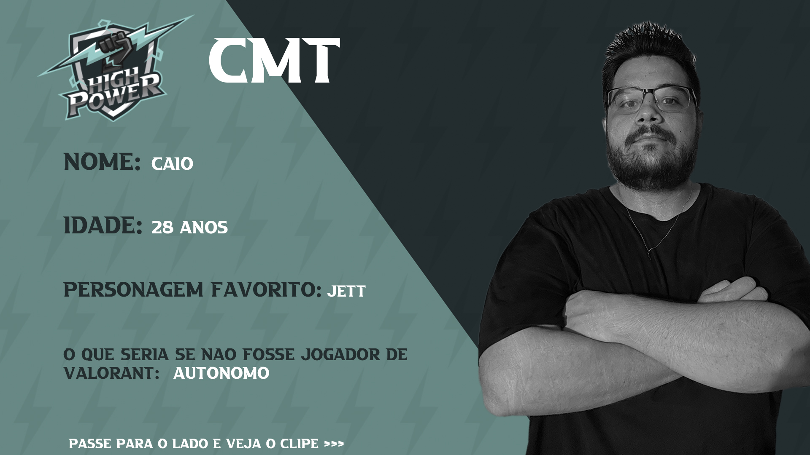

VALORANT: Morre cmtJ, jogador da HighPower; Causa não foi revelada
cmtJ, jogador de VALORANT da HighPower, morreu no último domingo (26), com 30 anos. A causa da morte não foi revelada, e a comunidade lamentou o ocorrido e prestou solidariedade para a família do jogador.
Com a notícia da morte de cmtJ, diversos nomes do cenário de VALORANT prestaram seus pêsames e relembraram como o jogador era em vida.
silentzz, ex-companheiro de equipe de cmtJ, lamentou a morte do amigo. “Uma pessoa que virou um irmão que só quem conhecia sabe o quão puro ele era. Sua voz não sai da minha cabeça, só tenho a agradecer por todos os momentos que nós passamos juntos”, escreveu.
A última partida de cmtJ foi pela terceira temporada da Copa Rakin no meio de novembro. A HighPower caiu para a Stars Horizon por 2-0 na lower bracket da competição.